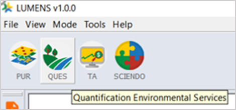
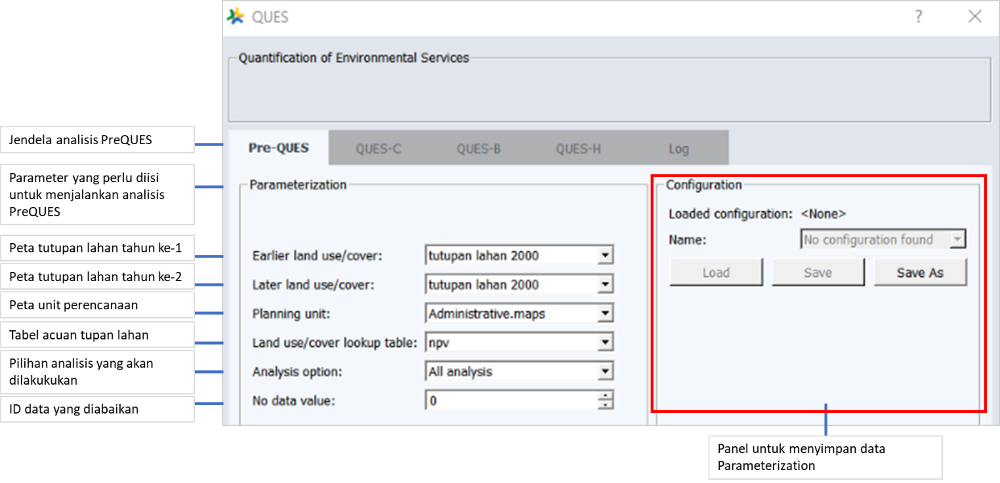
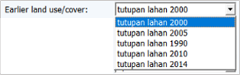
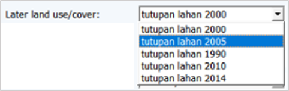
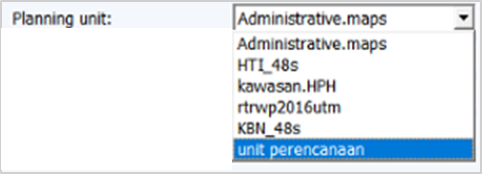
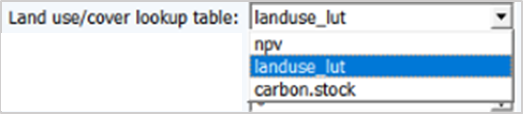
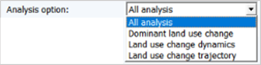
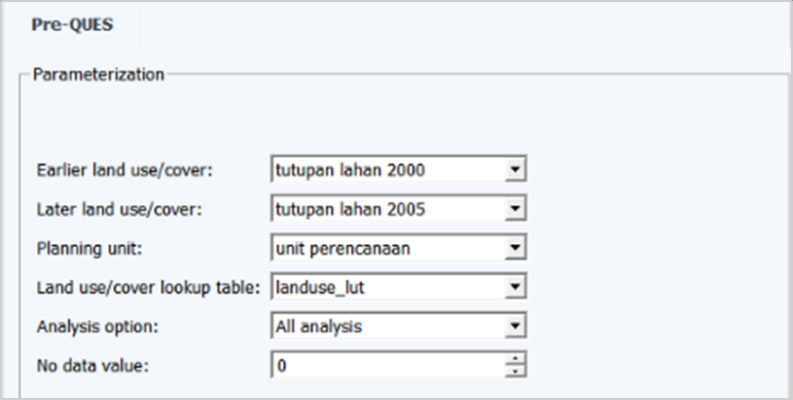
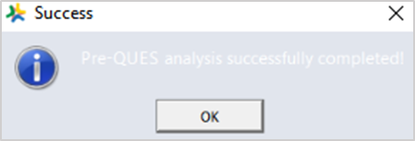

4.3 Proses Kerja
Proses Kerja
- Buka jendela analisis Pre-QUES
Pilih ikon QUES yang ada di bagian kiri atas jendela LUMENS → PreQUES

- Mengisi jendela PreQUES
Langkah selanjutnya adalah mengisi jendela analisis yang terbuka (Gambar 4.2).

Gambar 4.44 Jendela analisis PreQUES
- Mengisi kolom Earlier land use/cover
Kolom ini diisi dengan peta tutupan lahan pada tahun ke-1 (tahun yang lebih lama) akan dianalisis. Pilih  → tutupan_lahan_2000 (Gambar 4.3)
→ tutupan_lahan_2000 (Gambar 4.3)

Gambar 4.45 Pemilihan peta tutupan lahan yang digunakan untuk mengisi kolom Earlier land use/cover
- Mengisi kolom Later land use/cover
Kolom ini diisi dengan peta tutupan lahan pada tahun ke-2 (tahun yang lebih baru) akan dianalisis. Pilih  → tutupan_lahan_2005 (Gambar 4.4)
→ tutupan_lahan_2005 (Gambar 4.4)

Gambar 4.46 Pemilihan peta tutupan lahan yang digunakan untuk mengisi kolom Later land use/cover
- Mengisi kolom Planning unit
Kolom unit perencanaan diisi dengan peta perencanaan yang berlaku dan diakui di wilayah administratif, atau dapat menggunakan unit perencanaan hasil dari analisis PreQUES. Pilih  → unit_perencanaan (tanpa spasi)
→ unit_perencanaan (tanpa spasi)

Gambar 4.47 Memilih unit perencanaan yang akan digunakan
- Mengisi kolom Land use/cover lookup table
Kolom ini diisi dengan data tabel acuan tutupan lahan. Pilih  → landuse_lut (Gambar 4.6)
→ landuse_lut (Gambar 4.6)

Gambar 4.48 Memilih unit perencanaan yang akan digunakan
- Mengisi kolom Analysis option
Pilih analisis yang ingin dilakukan untuk PreQUES. Pilih  → All analysis (Gambar 4.7)
→ All analysis (Gambar 4.7)

Gambar 4.49 Pilihan analisis yang dapat dilakukan dengan
- Mengisi kolom No data value
Kolom ini berisi ID tabel dari data tabular acuan tutupan lahan yang berisi No Data. No Data perlu dituliskan atau disertakan dalam analisis ini untuk menganulir tutupan awan yang ada pada data tutupan lahan yang akan dianalisis. Dalam contoh ini, ID awan pada tabel acuan tutupan lahan adalah ‘0’.

Gambar 4.50 Tampilan kolom No data value yang telah diisi
- Memulai analisis
Jika seluruh kolom parameter telah diisi, untuk memulai proses analisis pilih tombol Process. Tunggu hingga proses analisis selesai, ditandai dengan munculnya layer seperti pada Gambar 4.9.

Gambar 4.51 Tampilan jendela yang menginformasikan jika proses analisis telah selesai
Created with the Personal Edition of HelpNDoc: Full-featured Help generator